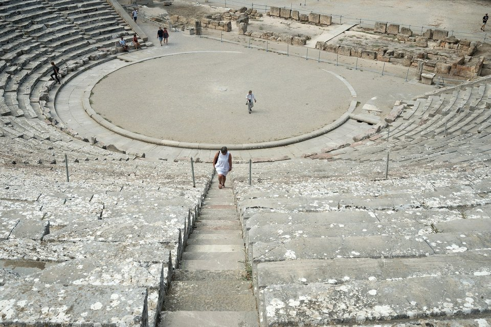

Greece · Epidaurus
Epidaurus audio guide
9 stops · 14 min · offline · plays as you arrive
The guide price is €3.99. This button is a placeholder. It does not open checkout and does not take payment. Email hello@getearwise.com.
A 9-stop offline audio guide to Epidaurus in Epidaurus, recorded in 10 languages and designed to play as you arrive. It covers the healing sanctuary of Asklepios and the grand fourth-century limestone theatre. Download once; you will not need a signal on the ground.
Stops
- 1
The Archaeological Museum of Epidaurus
Inside the small site museum, near the entrance to the sanctuary. (Indoors: manual play.). This is stop 1 on the route.
- 2
The Katagogion
Beside the large square ruin of the guest house, between the museum and the sanctuary. This is stop 2 on the route.
- 3
The Gymnasium and the Roman Odeon
In the large courtyard building with a small Roman theatre built inside it, south of the temple area. This is stop 3 on the route.
- 4
The stadium
At the long, narrow running track in a hollow west of the sanctuary, with stone seats on its sides. This is stop 4 on the route.
- 5
The Propylaia
At the northern edge of the sanctuary, among the foundations of the monumental entrance gate. This is stop 5 on the route.
- 6
Sanctuary of Asclepius
Stand here for the story of Sanctuary of Asclepius.
- 7
The Tholos
Beside the round foundations next to the Temple of Asclepius, where concentric stone rings lie at the centre. This is stop 7 on the route.
- 8
The Abaton
This segment focuses on The Abaton.
- 9
The theatre
In the theatre, ideally on one of the upper rows, looking down at the round stage floor. This is stop 9 on the route.
On the map
All 9 stop pins for this guide are marked. Open map